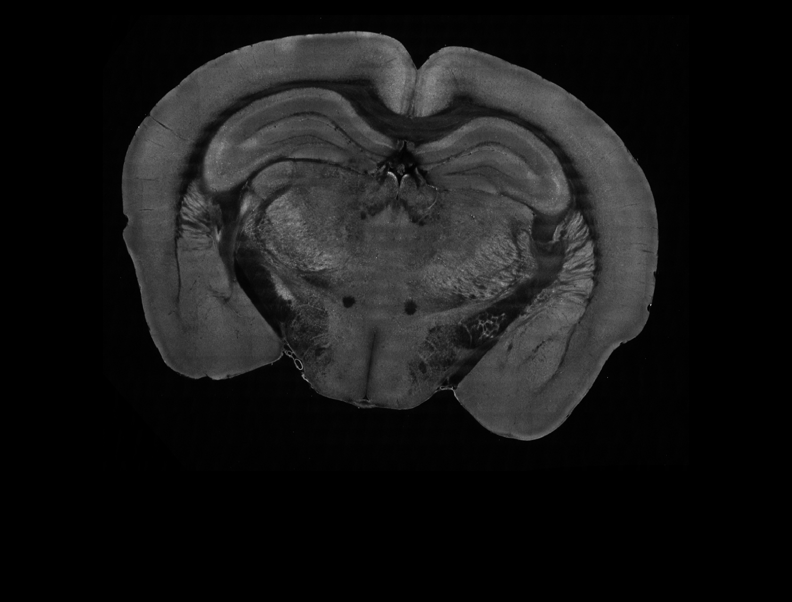
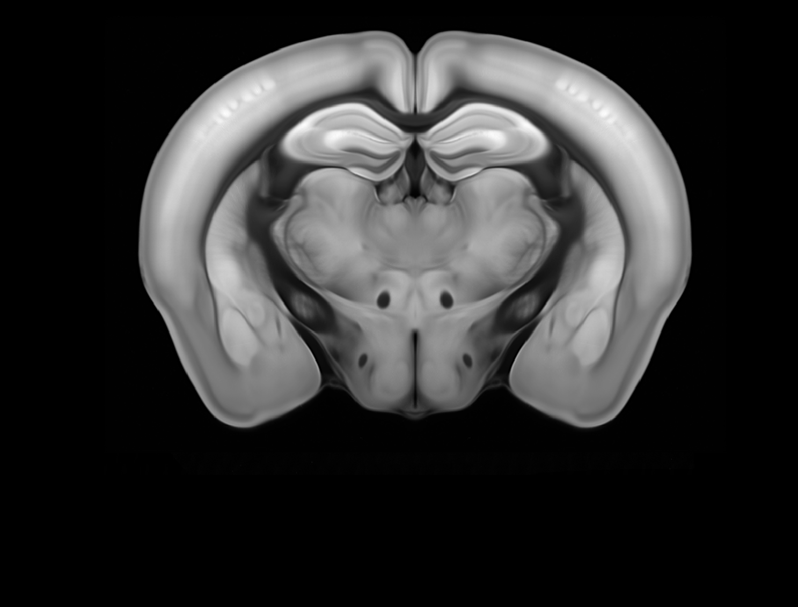
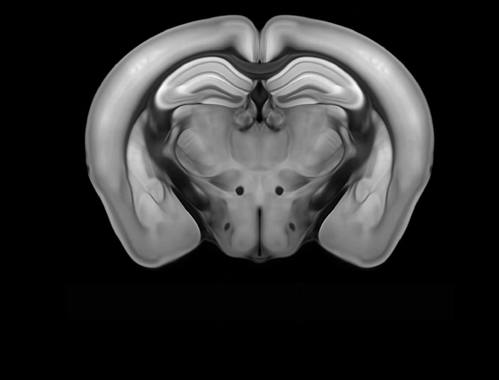
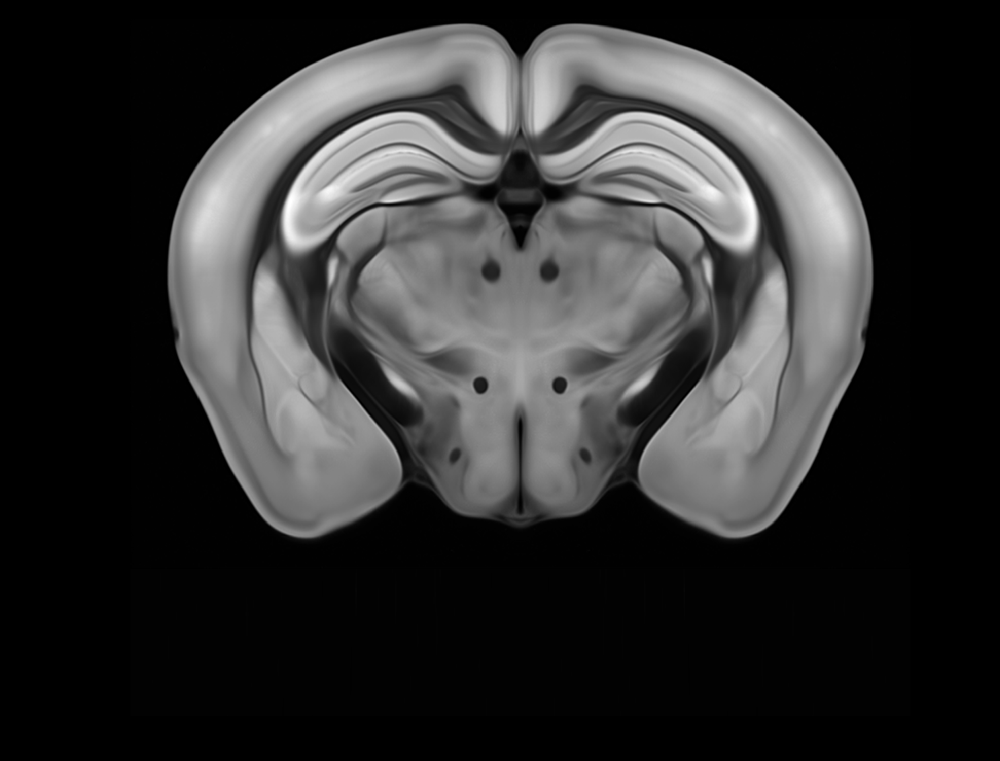
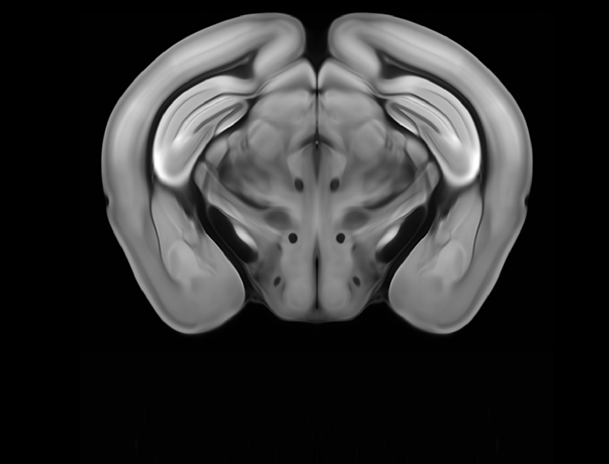
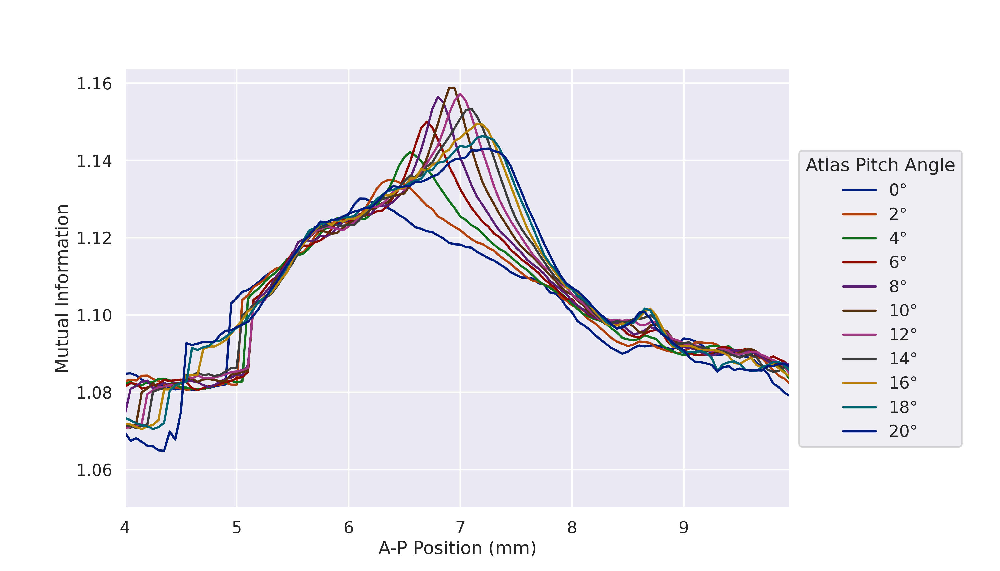
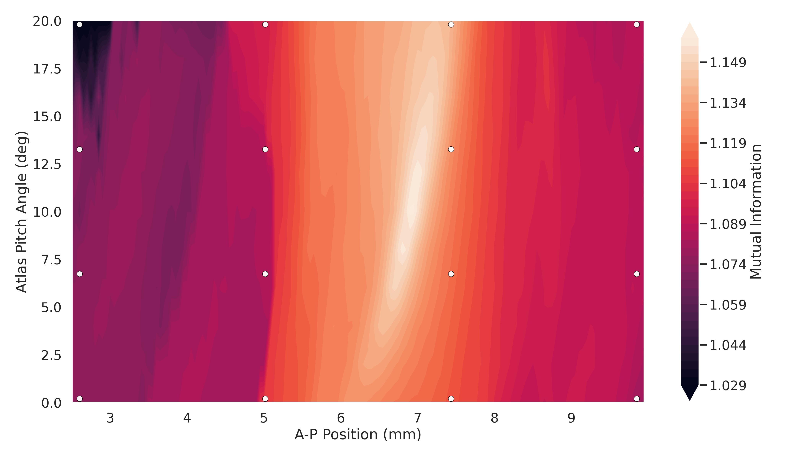
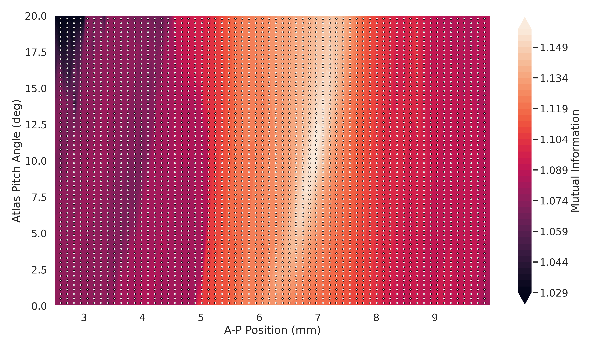

brainglobe-registration
Registering 2D planes and 3D subvolumes to a 3D atlas
2025-11-24
BrainGlobe Initiative
Established 2020 with three aims:
- Develop general-purpose tools to help others build interoperable software for computational neuroanatomy.
- Develop specialist software for specific analysis and visualisation needs.
- Reduce barriers of entry, and facilitate the building of an ecosystem of computational neuroanatomy tools.

Understanding the brain


Understanding the brain

BrainGlobe atlases
brainglobe-atlasapi


Whole-brain registration
brainreg

Allen Mouse
Brain Atlas
Enhanced and
Unified Mouse
Brain Atlas










Acknowledgements
Saarah Hussain
Alessandro Felder
Niko Sirmpilatze
Adam Tyson


 Contributors
Contributors
Christian Niedworok
Charly Rousseau
Horst Obenhaus
Chryssanthi Tsitoura
Sepiedeh Keshavarzi
Mateo Vélez-Fort
Stephen Lenzi
Rob Campbell
Alessandro Felder
Federico Claudi
Luigi Petrucco
Adam Tyson
Troy Margrie
Tiago Branco
Ruben Portugues
Joe Ziminski
Sofia Miñano
Niko Sirmpilatze
Nicholas Del Grosso
Laura Porta
Lee Cossell
Antonin Blot
David Pérez-Suárez
David Stansby
Will Graham
Patrick Roddy
Adrien Berchet
Mathieu Bourdenx
bkntr
NovaFae
David Young
Sam Clothier
Gubra-ApS
Kailyn Fields
ramroomh
Samuel Diebolt
Chris Roat
Oren Amsalem
kclamar
Draga Doncila Pop
juanma9613
Jules Scholler
Iaroslavna Vasylieva
Nicolas Peschke
Justin Kiggins
Peter Sobolewski
Simão Bolota
chili-chiu
jaimergp
Sebastian Lammers
Matt Colligan
Paul Brodersen
Carter Peene
francesshei
Sean Martin
Ben Dichter
4iar
Marco Musy
Anna Medyukhina
stegiopast
EmanPaoli
lidakanari
Alexis Arnaudon
Ziyang Liu
Philip Shamash
koushik-ms
Harald Reingruber
Emily Jane Dennis
Peak
Maximilian Blacher
Hernando Martinez Vergara
Estelle
nicole-vissers
GD
Michael Kunst
Estelle Nassar
Sara Mederos
Igor Tatarnikov
Viktor Plattner
Carlo Castoldi
Jingjie Li
Guillaume Le Goc
Harry Carey
Matt Einhorn
Kimberly Meechan
Robert Kozol
Roberto
Axel Bisi
Jung Woo Kim
Saima Abdus
Saarah Hussain
Sacha Hadaway-Andreae
Presa
Henry Crosswell
Nischit Kumar
Kirato Yoshihara
Leonard Schwigon
Dinora Abdulazhanova
Katrin Haase
Dominik Heyers
Isabelle Museliak
Henrik Mouritsen
Simon Weiler
Stella Prins
Richard Dushime
Miguel Xochicale
M S P
Abdul Samad
Prisha Sharma
Farida Yusuf
Anshu Saini
Menna1812
ayush2281
BethCr
Swapnaneel Patra
Xiaoyu Deng
DwarvesEatRocks
DPWebster
Conrad
pranav33317
Biswanath Saha
Federico F.
Tim Monko
Kaixiang Shuai
Giulia Paci
Marco Dalla Vecchia
Pavel Vychyk
Ishrat Zaman
Asma Bashir
Fatma S. Elsharkawy
Open Software Summer School 2026
For more information visit: https://neuroinformatics.dev/open-software-summer-school/